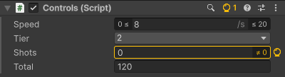
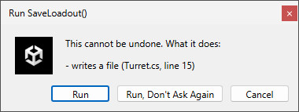
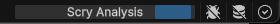

How Scry works
Values
Scry analyzes your scripts each time they change, down to the body of every method and property, without running any of your code. What the code does with a value decides how Scry draws it. For example, a number the code clamps shows its minimum and maximum at the ends of its field, a value it compares against fixed values gets a dropdown of them, and a value it would reject gets a warning.

Properties, methods and events
Besides fields, Scry's Inspector shows your properties, methods and events. A method runs from a button named after it, and a property shows its value by running its getter. A getter Scry proves changes nothing is live: Scry reads it again several times a second, so it always shows the current value.
Before any of this code runs, the analysis proves what it can change. Code that changes nothing runs freely. Code that changes only its own object runs as one undo step, and the undo restores exactly that object: the GameObject and its components, or the ScriptableObject, with every plain C# object they hold. Anything else asks first, and lists what Scry knows it does.

A coroutine runs in Play mode, on the component that holds it. Its button shows it running; select the button again to stop it.
An asynchronous method, one returning a Task, an Awaitable or anything else you can await, runs in Edit mode and in Play mode. Its button shows it running, and its result fills in when it completes. When the method takes a CancellationToken, Scry passes one in, cancelled when you select the button again or when the component is destroyed. Without one, the method runs until it completes.
What Scry reads
Scry reads your scripts, every package shipped as source, and the common Unity and .NET APIs. Anything it does not understand counts as unrestricted: Scry can miss a fact, but it never claims a restriction your code does not make. To describe code Scry cannot read, such as a precompiled plugin, write a declaration file.
The first analysis
The first analysis runs right after you install Scry, shown as Scry Analysis in Unity's status bar. Until it finishes, fields show Unity's plain controls and every method asks before it runs.
